+
+ +
+ +
+ + … = 2
+ … = 2回顾一下到目前为止我们接触到的无穷和。
在本章开头，我们讨论了：
1 + + + + + … = 2
我们发现，这是等比数列的一个特例。等比数列公式指出，对于任意x，只要 –1 < x < 1，就有
1 + x + x2 + x3 + x4 + … =
注意，当x为0到–1之间的负数时，等比数列公式同样有效。例如，如果x = –1/2，则：
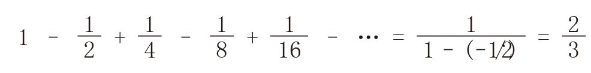
各项交替为正负数且趋于0的级数叫作“交错级数”，交错级数一定会收敛于某个数。在理解上面这个交错级数时，我们可以画一条实数线，并把手指放在数字0的位置上。然后，把手指向右移动1个单位，再向左移动1/2个单位，再向右移动1/4个单位（这时候，你的手指应该在3/4的位置上），再向左移动1/8个单位（此时，你的手指应该在5/8的位置上）。以此类推，你的手指将在某个数字附近来回移动（在本例中，这个数字是2/3）。
现在，请大家观察下面这个交错级数：
1 – + – +
– + –
– + …
+ …
看完前4项之后，我们知道这个无穷级数的和至少是1–1/2 + 1/3 – 1/4 = 7/12 = 0.583…；看完前5项之后，我们知道这个无穷级数的和至多是1–1/2 + 1/3 – 1/4 + 1/5 = 47/60 = 0.783…。这个级数的和是0.693 147…，在上述两个数字中间偏右的位置。利用微积分，我们可以算出这个和的确切值。
我们先上一道“开胃小菜”。请大家写出等比数列：
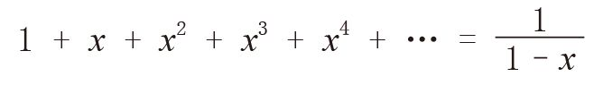
想一想，如果两边同时求导，会出现什么情况？本书第11章告诉我们：1，x，x2，x3，x4…的导数分别是0，1，2x，3x2，4x3…。因此，如果我们假设无穷级数和的导数就是导数的和，那么利用链式法则对(1 – x)–1求导，我们可以得出：对于 –1 < x < 1，有：
我们把等比数列中的x替换成–x，就会发现：对于 –1 < x < 1，有：
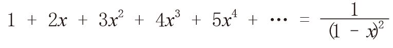
现在，求等式两边的反导数（微积分学称之为“不定积分”）。不定积分是求导的逆运算，例如，x2的导数是2x，反过来，2x的不定积分是x2。[x2 + 5，x2 + π或x2 + c（c为任意数）的导数同样是2x，所以2x的不定积分其实是x2 + c。]1，x，x2，x3，x4…的不定积分分别是x，x2/2，x3/3，x4/4，x5/5…；1/(1 + x)的不定积分是1 + x的自然对数。也就是说，对于 –1 < x < 1，有：
x –
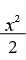
+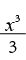
–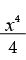
+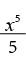
– … = ln(1 + x)等式左边的常数项为0，这是因为当x = 0时，我们希望右边的值为ln 1 = 0。当x逐渐接近1时，我们就会发现0.693 147…的自然含义，即：
1 – + – +– + … = ln 2
如果我们将等比数列中的x替换成 –x2，当x在 –1~ 1之间时，就有：
1 – x2 + x4 – x6 + x8 – … =
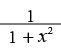
大多数微积分教科书都会证明 y = arc tanx 的导数为 y' = 。对等式两边同时求不定积分（注意，arc tan 0 = 0），就会得到：
x – + –
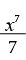
+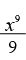
– … = arc tan x令x趋近0，就会得到：
1 – + – +
+ –
– + … = arc tan 1 =
+ … = arc tan 1 =
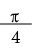
在研究了等比数列的应用之后，我们接下来讨论等比数列在应用过程中容易出现的错误。等比数列的定义指出，对于任意x，只要 –1 < x < 1，就有：
1 + x + x2 + x3 + x4 + … =
我们来看当x = –1时会出现什么结果。根据等比数列公式，有：
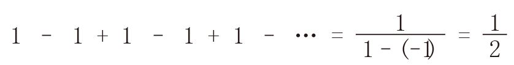
这个答案不可能是正确的。因为我们加、减的都是整数，所以最后结果不可能是像1/2这样的分数。即使这个级数收敛于某个数字，也不会是1/2。不过，这个答案并不是完全没有道理。观察该级数的部分和，就会发现：
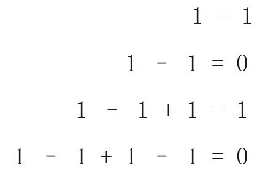
以此类推，由于部分和中有一半是1，还有一半是0，因此1/2这个答案似乎不无道理。
如果x取不符合条件要求的值，比如x = 2，根据等比数列，就会得出：
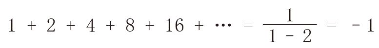
这个答案似乎比1/2更荒谬。多个正数的和怎么可能是负数呢？不过，这个答案也许同样可以找到一个合理的解释。比如，我们在本书第3章见过，在类似于10 ≡ –1(mod 11)的关系中，10k ≡ (–1)k (mod 11)这个等式是成立的。也就是说，正数也可以表现出负数的特性。
让我们打破常规，以一种创造性思维去理解1 + 2 + 4 + 8 + 16 + …的意义。我们在本书第4章讨论过，每一个正整数都可以表示成2的幂次方之和的唯一形式，这是计算机采用的二进制的基础。每个整数都是有限个2的幂次方之和。比如，106 = 2 + 8 + 32 + 64中包含4个2的幂次方。现在，我们假设无穷大的整数也可以表示成这种形式，其中2的幂次方的个数可以根据需要，想用多少个就用多少个。那么，无穷大的整数就会具有以下这种典型的表现形式：
1 + 2 + 8 + 16 + 64 + 256 + 2 048 + …
其中，2的幂次方连续不断地出现。我们不清楚这些数字有什么含义，但我们可以建立高度一致的运算规则。比如，只要我们确定一种自然的进位方式，就可以对这些数字进行加法运算。比如，在上面这个无穷级数的基础上加上106的2的幂次方表达式，就会得到：
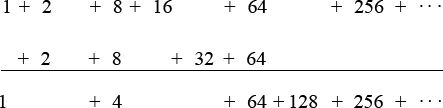
其中，2 + 2得4；接下来，8 + 8得16，它与后面的16相加得32，32又与后面一个32相加得64；两个64相加得128，而从256往后的所有项都保持不变。现在，我们给“最大”的无穷大整数加上1：
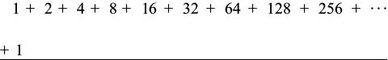
在这种情况下会发生一连串的如上所述的加法运算，而横线下面看不到一个2的幂次方。也就是说，和可以视为0。既然(1 + 2 + 4 + 8 + 16 + …) + 1 = 0，那么在等式两边同时减去1，就会发现这个无穷级数的和似乎真的等于 –1。
下面这个匪夷所思的无穷级数求和是我的最爱：
1 + 2 + 3 + 4 + 5 + … =
在证明有穷等比数列和的时候，我们在第二种证法里使用了代数的移项法。现在，我们用同样的方法来“证明”上式。这种方法适用于有穷级数求和，如果应用于无穷级数求和，就可能导致荒谬的结果。我们先用代数的移项法来解释前文中的一个恒等式。我们按下列方式把这个等式写两遍，但在写第二遍时每项向后移动一个位置：
S = 1 – 1 + 1 – 1 + 1 – 1 + …
S = – 1 – 1 + 1 – 1 + 1 – …
将两个等式相加，可以得到：
2S = 1
因此，S = 1/2。这跟我们在前文中令x = –1时根据等比数列公式得到的结果一致。
利用代数移项法，我们可以轻而易举地证明等比数列公式，不过证明过程不太严谨。
S = 1 + x + x2 + x3 + x4 + x5 + …
xS = x + x2 + x3 + x4 + x5 + …
两式相减，就会得到：
S(1 – x) = 1
S =
如果把我们最渴望知道答案的无穷级数求和问题变成一个正负项交错排列的形式，就会得出一个非常有趣的答案：
1 – 2 + 3 – 4 + 5 – 6 + 7 – 8 + … =
下面，我们用移项法来证明这个结论。先把等式写两遍：
T = 1 – 2 + 3 – 4 + 5 – 6 + 7 – 8 + …
T = 1 – 2 + 3 – 4 + 5 – 6 + 7 – …
两式相加，就会得到：
2T = 1 – 1 + 1 – 1 + 1 – 1 + 1 – 1 + …
也就是说，2T = S = 1/2。所以，T = 1/4。证明完毕。
最后，我们再做一个实验。把所有正整数的和记作U，然后在它的下面列出T的算式（不用移位）。
U = 1 + 2 + 3 + 4 + 5 + 6 + 7 + 8 + …
T = 1 – 2 + 3 – 4 + 5 – 6 + 7 – 8 + …
用第一个等式减去第二个等式，就会得到：
U – T = 4 + 8 + 12 + 16 + … = 4 (1 + 2 + 3 + 4 + …)
也就是说：
U – T = 4U
求U的值，因为3U = –T = –1/4所以：
U = –1/12
证明完毕。
必须指出，无穷多个正整数的和必然趋向无穷大。但是，不要简单地把上面这些有穷数答案全部视为噱头，因为在某些情况下，它们其实是有道理的。在理解数字时，如果我们拓展思路，就会发现1 + 2 +4 + 8 + 16 + … = –1并非毫无道理。回想一下，如果我们对数的理解仅限于实数线，就不可能找到二次幂等于 –1的数字。但是，如果我们把复数看作复平面上的“居民”，而且为它们建立一套严格统一的运算法则，就可以找到二次幂等于–1的数字了。事实上，研究弦理论的理论物理学家在计算时就会用到1 + 2 + 3 + 4 + … = –1/12这个结果。如果遇到某些看似荒谬的计算结果，例如上面给出的这些无穷级数的和，大家尽可以一笑置之，但是，如果我们充分发挥自己的想象力，思考各种可能性，说不定这个世界就会多出一个严谨统一、充满美感的数字系统。
在结束本书的写作之前，我再向大家介绍一个看上去荒诞不经的计算结果。在本节开头，我告诉大家下面这个交错级数收敛于ln 2 = 0.693 147…。
1 – + – +– + …
改变这些数字的先后次序，它的和应该不会发生变化，因为根据加法交换律，对于任意数字A和数字B，都有：
A + B = B + A
但是，如果把这些数字按照下面这种次序重新排列，会出现什么结果呢？
1 – – +– – + –
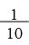
–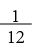
+ …注意，加在一起的还是那些数字，因为所有分母为奇数的数字都带有正号，所有分母为偶数的数字都带有负号。尽管算式中偶数的出现频率是奇数的两倍，但无论奇数还是偶数都用之不竭，而且原算式中的所有项在新算式中都只出现一次。大家对此没有异议吧？那么，请大家算出这个和：
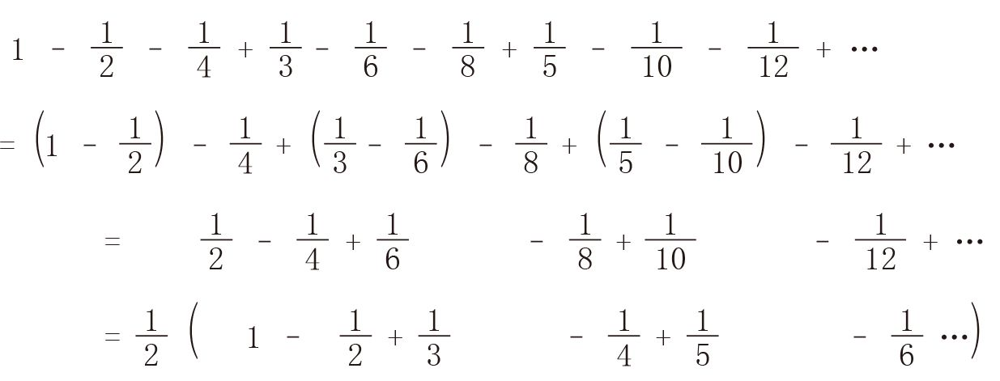
结果我们发现它竟然是原无穷和的一半！怎么会出现这种情况呢？把各项数字重新排列，计算结果竟然变得不一样了。之所以出现这个令人惊讶的结果，是因为在无穷多个数字相加时不可以使用加法交换律。
如果收敛级数中的正数项和负数项分别构成发散级数（也就是说，正数项的和为∞，负数项的和为–∞），就会出现这样的问题。我们给出的最后一个例子就是这种情况。这样的级数被称为“条件收敛级数”。令人吃惊的是，对条件收敛级数重新排序，可以得出我们想要得到的任意结果。比如，如何排列上面这个级数，让它最后的得数为42呢？首先，让正数项相加，使它们的和刚好超过42，然后减去第一个负数项。再加上一个正数项，使和再次超过42，然后减去第二个负数项。重复上述步骤，最终的和就会越来越接近42。（比如，减去第5个负数项 –1/10之后的计算结果，与42的差会始终保持在0.1以下。减去第50个负数项 –1/100后的计算结果与42的差会始终保持在0.01以下，以此类推。）
我们在实践中遇到的无穷级数大多不会表现出这种奇怪的特性。如果某个无穷级数的所有项在取绝对值（将负数项全部变成正数项）之后具有收敛性，我们就称这是一个“绝对收敛级数”。例如，我们在前文中见过的交错级数：
1 – + – + – … =
它就是一个绝对收敛级数，因为各项的绝对值相加可以得到一个我们非常熟悉的收敛级数：
1 + + + + + … = 2
绝对收敛级数虽然有无穷多项，但它们可以应用加法交换律。因此，在上面那个交错级数中，无论我们如何打乱1、–1/2、1/4、–1/8等项的先后次序，它们的和一定收敛于2/3。
无穷级数可以无休止地写下去，但是写作总有结束的一天，我也必须遵从这个规律。现在，我似乎应该跟大家说再见了，但是，我仍然希望把握最后的机会，继续带领大家遨游数学的魔法王国。